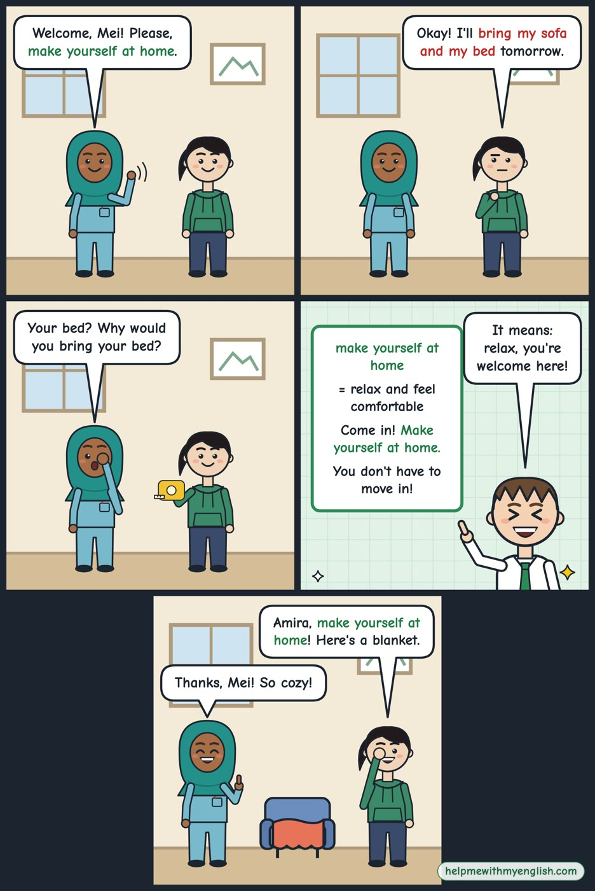

make yourself at home
Relax and feel comfortable in someone's house.
Come in and make yourself at home!
Tip: Say it to a guest as a warm invitation, usually as an imperative: 'Make yourself at home'; change 'yourself' to 'yourselves' for more than one person, and don't use it about your own comfort.
Hear it in conversation
Workbook
1. What does it mean?
In this conversation, what does 'make yourself at home' mean?
2. Fill the gap
Take your coat off, grab a seat and while I find some glasses for the water.
3. Choose the best reply
Ken: Thanks for inviting us over, Amira. Your flat is so bright and cosy!
4. Your turn: speak
Tell me about a time you stayed at someone else's home. How did they make you feel welcome?
Show an example answer
Last summer I stayed with my friend's family in Lisbon for a week. When I arrived, her mum said, 'Make yourself at home,' and she showed me where everything was in the kitchen. I felt relaxed straight away, and by the second day I was making coffee for everyone.
Answer key: make yourself at home
- 1. B. Relax and use the place as if it were your own
- 2. make yourself at home
- 3. A. Thanks, Ken! Come in and make yourselves at home. Dinner's nearly ready.
- 4. Example: Last summer I stayed with my friend's family in Lisbon for a week. When I arrived, her mum said, 'Make yourself at home,' and she showed me where everything was in the kitchen. I felt relaxed straight away, and by the second day I was making coffee for everyone.
See it in a comic
